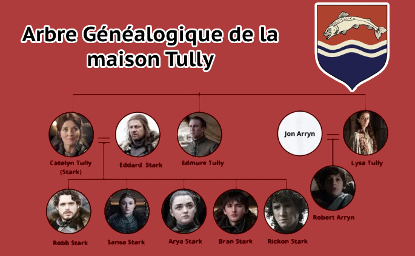
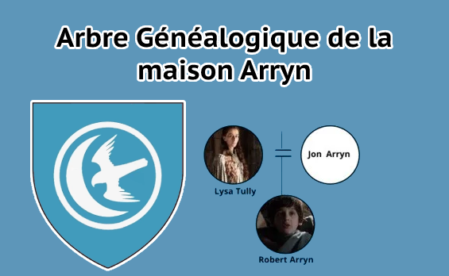
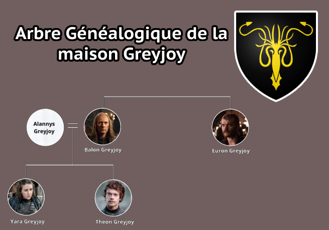
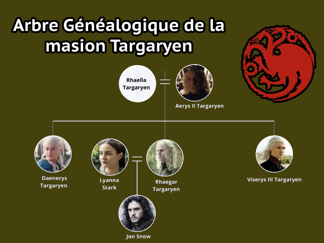
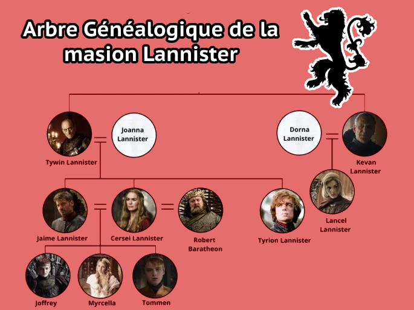
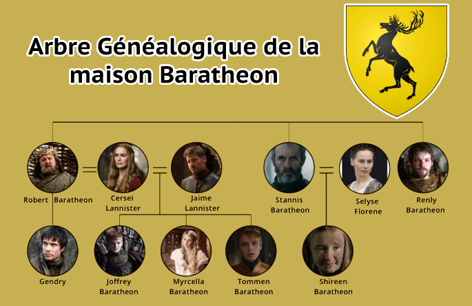
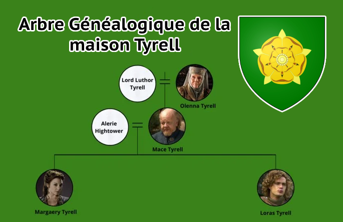

Westeros est un continent ayant environ la taille de l'Amérique du Sud dont les différentes régions ont été
unifiées depuis la Conquête des Targaryen il y a environ trois cent ans avant le début de la saga. La région
nord du continent fait à elle seule à peu près la même taille que toutes les autres régions réunies, mais
est bien moins densément peuplée. George R.R. Martin estime que Westeros était peuplé en l'an 300 d'environ
vingt millions d'habitants.
Les habitants sont appelés "ouestriens".
Le Conflans
Le Conflans, domaine de la Maison Tully, est une région de Westeros bordée par le Neck au nord, par le Val
d'Arryn et les Terres de la Couronne à l'est, et par le Bief et les Terres de l'Ouest au sud et à l'ouest.
C'est une région fertile traversée par de nombreux cours d'eau. Les bâtards y sont nommés Rivers.
Vivesaigues
Demeure de la Maison Tully, est un château situé aux confluents de la Ruffurque et de la Culbute. C'est
une place triangulaire difficile à prendre car deux de ses côtés sont bordés par les deux fleuves et le
troisième peut être inondé en cas de siège, faisant du château une île.

Arbre généalogique des Tully
Les Jumeaux
Siège de la Maison Frey, forment une forteresse constituée de deux donjons, situé chacun sur une rive de
la Verfurque et reliés entre eux par un pont au centre duquel se tient une tour fortifiée.
Harrenhal
Plus grande forteresse des Sept Couronnes, ce château aux dimensions colossales a la réputation d'être
maudit car plusieurs maisons nobles l'ont successivement occupé mais toutes ont connu un destin funeste.
Harrenhal est, à l'époque de la saga, dans un état de délabrement avancé et seule une petite partie de
la forteresse est utilisée par ses occupants. Après la Bataille de la Néra, Littlefinger en devient le
seigneur nominal.
Le Val D'Arryn
Val d'Arryn, domaine de la Maison Arryn, est une région montagneuse bordée par le Conflans à l'ouest et les
Terres de la Couronne au sud. La présence dans cette région de clans montagnards ne se soumettant pas à
l'autorité royale rend les voyages dangereux. Les bâtards y sont nommés Stone.
Les Eyrié
DemTyrelleure de la Maison Arryn, est une forteresse réputée imprenable car elle est située au sommet
d'une
haute montagne et n'est accessible que par un étroit sentier se terminant par une cheminée naturelle, où
ont été creusées des marches, ou par des nacelles hissées par des treuils.

Arbre généalogique des Arryn
Les Îles de Fer
Domaine de la Maison Greyjoy, sont un archipel de sept îles situées au large du Conflans, sur la côte ouest
de Westeros. Elles doivent leur nom à la présence de nombreuses mines de fer. Ces îles ont un sol pauvre et
rocailleux et leurs habitants, les Fer-nés, vivent principalement de la pêche et du pillage de terres plus
fertiles. Les bâtards y sont nommés Pyke.
Pyk
Siège de la Maison Greyjoy. C'est une forteresse constituée de plusieurs tours bâties sur trois îles
principales à l'extrémité d'une péninsule rocailleuse.

Arbre généalogique des Greyjoy
Les Terres de la Couronne
Fief ancestral de la Maison Targaryen, sont bordées par le Val d'Arryn au nord, le Conflans à l'ouest, et les
Terres de l'Orage au sud. Les bâtards y sont nommés Waters.
Peyredragon
Île volcanique située dans la baie de la Néra qui est la demeure ancestrale de la Maison
Targaryen. La citadelle homonyme, dont l'architecture est dédiée aux dragons, appartient au début de la
saga à Stannis Baratheon.

Arbre généalogique des Targaryen
Port-Réal
La capitale, ainsi que la ville la plus peuplée (environ cinq cent mille habitants), des Sept Couronnes.
Située à l'embouchure de la Néra, la ville est entourée de remparts et est en partie bâtie sur trois
collines.
Rois des 7 Couronnes
Nom
Surnom
Règne
Maison et blason
Aerys II
Le Roi Fou
259-281
Targaryen
Robert I
L'Usurpateur
281-298
Baratheon
Joffrey I
298-300
Baratheon
Tommen I
300-303
Baratheon
Cersei I
La Lionne
303-305
Lannister
Daenerys I
La Mère des Dragons
305 (quelques heures)
Targaryen
Brandon I
Le Rompu
305-...
Stark
Les Terres de l'Ouest
Domaine de la Maison Lannister, sont bordées par le Conflans à l'est et par le Bief au sud. Ce sont des
terres montagneuses riches en minerais et notamment en gisements d'or. Les bâtards y sont nommés Hill.
Castral Roc
Siège de la Maison Lannister et est réputée pour être l'une des plus puissantes forteresses de Westeros.
George R. R. Martin s'est inspiré du rocher de Gibraltar pour la créer.

Arbre généalogique des Lannister
Les Terres de l'Orage
Domaine de la Maison Baratheon, sont bordées par les Terres de la Couronne au nord, le Bief à l'ouest, et
Dorne au sud. La région comporte de nombreuses terres boisées ou montagneuses. Les bâtards y sont nommés
Storm.
Accalmie
Siège de la Maison Baratheon, est une puissante forteresse située au bord de la mer et construite de
façon à résister à ses assauts. Souvent assiégée, cette place-forte n'est jamais tombée.

Arbre généalogique des Baratheon
Le Bief
Domaine de la Maison Tyrell, est la région couvrant le sud-ouest de Westeros. La région est couverte de
plaines agricoles très fertiles. Les bâtards y sont nommés Flowers.
Hautjardin
Siège de la Maison Tyrell, est située sur les rives de la Mander.

Arbre généalogique des Tyrell
Villevieille
Deuxième plus grande ville de Westeros après Port-Réal. Siège de la Maison Hightower, elle est située à
l'embouchure de l'Hydromel et c'est un important port de commerce. La ville abrite également la
Citadelle des Mestres. La Grand-Tour de Villevieille est un phare qui mesure plus de deux cent mètres de
hauteur est l'édifice le plus haut de Westeros.
Dorne
La péninsule de Dorne, domaine de la Maison Martell, se situe au sud-est de Westeros. Les parties
frontalières avec le Bief et les Terres de l'Orage sont montagneuses et toutes les autres assez désertiques.
C'est la région la moins peuplée de Westeros et la dernière à avoir été rattachée aux Sept Couronnes. Les
bâtards y sont nommés Sand.
Lancehélion
Demeure de la Maison Martell, est située à la pointe sud-est de la péninsule de Dorne, et donc du
continent.